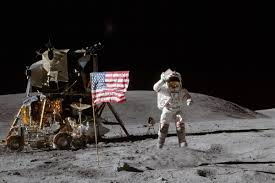

Moon Landing
Moon landing conspiracies claim that the U.S. faked the Apollo moon landings, particularly Apollo 11 in 1969. Skeptics argue that NASA staged the event to win the Space Race against the Soviet Union. Common claims include anomalies in photos, such as the waving flag in a vacuum, inconsistent shadows, and the lack of stars in the sky.
Illuminati Card Game

The Illuminati card game, released in 1982 by Steve Jackson Games, is a satirical strategy game where players control secret societies vying for world domination. Over time, conspiracy theorists have linked the game to real-world events, claiming that certain cards—such as those depicting terrorist attacks, political scandals, or global disasters—predict the future. Some believe the game reflects hidden knowledge of the so-called Illuminati, a secret elite controlling world affairs.